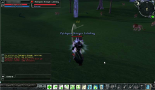
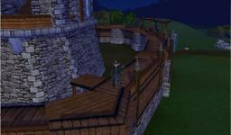
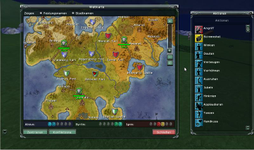

Regnum Online
Dieser Artikel wurde für die folgenden Ubuntu-Versionen getestet:
Dieser Artikel ist mit keiner aktuell unterstützten Ubuntu-Version getestet! Bitte diesen Artikel testen und das getestet-Tag entsprechend anpassen.
Zum Verständnis dieses Artikels sind folgende Seiten hilfreich:
Regnum Online  ist ein kostenloses Fantasy-MMORPG in 3D. Drei Reiche kämpfen in einer Warzone um Forts und Schlösser der anderen Königreiche. Zusätzlich hat jedes Reich einen eigenen Bereich, in dem man Quests erledigen und Monster töten kann, um höhere Level zu erreichen. Aber Vorsicht! Die anderen Reiche können in diese Bereiche einbrechen und Edelsteine stehlen, um sich anschließend Vorteile zu verschaffen. Regnum Online ist für Linux, Windows und Mac OS X verfügbar.
ist ein kostenloses Fantasy-MMORPG in 3D. Drei Reiche kämpfen in einer Warzone um Forts und Schlösser der anderen Königreiche. Zusätzlich hat jedes Reich einen eigenen Bereich, in dem man Quests erledigen und Monster töten kann, um höhere Level zu erreichen. Aber Vorsicht! Die anderen Reiche können in diese Bereiche einbrechen und Edelsteine stehlen, um sich anschließend Vorteile zu verschaffen. Regnum Online ist für Linux, Windows und Mac OS X verfügbar.
Installation¶
Hinweis!
Fremdsoftware kann das System gefährden.
Die Installation gestaltet sich sehr einfach. Auf der offiziellen Seite  kann man sich die passende Linux-Version herunterladen.
Alternativ kann auch von Softpedia oder regnumonlinegame.com
kann man sich die passende Linux-Version herunterladen.
Alternativ kann auch von Softpedia oder regnumonlinegame.com  heruntergeladen werden. Nach dem Download der Datei muss diese ausführbar gemacht werden [2],[3]. Dann die Datei mit Doppelklick öffnen und den Installationsanweisungen folgen.
heruntergeladen werden. Nach dem Download der Datei muss diese ausführbar gemacht werden [2],[3]. Dann die Datei mit Doppelklick öffnen und den Installationsanweisungen folgen.
Für den Sound wird noch folgendes Paket benötigt[1]:
libopenal1
 mit apturl
mit apturl
Paketliste zum Kopieren:
sudo apt-get install libopenal1
sudo aptitude install libopenal1
Standardmäßig findet man das Spiel dann unter "Anwendungen -> Regnum Online -> Regnum Online".
|  |  |  |
| Kampfszene | Fort | Weltkarte |
Registrierung¶
Vor dem Spielstart, muss man sich auf der Projektseite registrieren. Dies ist vollkommen kostenlos. Es gibt einen Shop im Spiel, in dem man für echtes Geld Premiumgegenstände kaufen kann. Dies ist aber völlig freiwillig, und das Spiel ist auch ohne sie sehr gut zu bewältigen.
Spiel starten¶
Wenn man das Spiel gestartet hat, öffnet sich ein Dialog mit den Nutzungsbedingungen, die man akzeptieren muss, um spielen zu können. Danach muss man sich mit seinen Daten einloggen. Die zwei deutschen Server heißen Muspell und Niflheim. Einfach einen der Server auswählen und auf "Betrete die Spielewelt" klicken. Anschließend öffnet sich das Spiel und man kann sich zu Beginn ein Königreich aussuchen. Die Reiche enthalten eventuell Belohnungen, die bei der Auswahl angezeigt werden. Diese sollen neue Spieler in unterbesetzte Reiche locken, damit die Balance der Reiche auf dem Server nicht verloren geht. Nachdem man ein Reich ausgewählt hat, muss man sich einen Charakter erstellen. Anschließend kann es losgehen!
Steuerung¶
| Steuerung | |||
| Taste(n) | Funktion | Taste(n) | Funktion |
| W | Vorwärts laufen |  | Figur drehen |
| A | Nach links laufen |  | Ansicht drehen |
| S | Rückwärts laufen |  | Zoom |
| D | Nach rechts laufen | Z | Rennen/Gehen |
| Q | Nach links drehen | R | Hinsetzen/Aufstehen |
| E | Nach rechts drehen | F | Automatisch laufen |
Tipps¶
Mit M öffnet man eine Übersichtskarte. Dort sieht man unter anderem welche Forts welchem Reich gehören und wo man sich derzeitig befindet.
Durch Gedrückt halten von V , sieht man über den Köpfen der Figuren, deren Namen, Gilde und Reich.
In die Warzone (WZ) sollte man frühstens ab Level 30 gehen, da alle anderen den Kampf nur behindern (das Erreichen von Level 30 dauert in der Regel nicht zu lange).
Weitere Einsteigertipps erhält man auf der Seite der deutschen Regnum Online Community
. Des Weiteren findet man dort Statusbilder, eine NPC-Suche, eine Questübersicht und viele andere nützliche Dinge.
Probleme¶
Beim Starten des Spiels kann es vorkommen, dass ein Fenster mit der folgenden Fehlermeldung erscheint:
Es gibt drei mögliche Gründe für diesen Fehler:
1. Ihre Grafikkarte ist zu alt
2. Sie haben nicht die neuste Version des Grafikkartentreibers installiert
3. Sie haben nicht die neuste Version von DirectX installiert
Am Häufigsten ist dieser Fehler auf einen zu alten Grafiktreiber zurück zu führen. Allerdings kann dieses Problem bei älteren Grafikkarten durch fehlenden Support eventuell nicht behoben werden. Am besten man informiert sich diesbezüglich über seine Grafikkarte.
Deinstallation¶
Einfach "Anwendungen -> Regnum Online -> Uninstall Regnum Online" aufrufen und den Anweisungen folgen. Danach bei Bedarf noch den Ordner /home/BENUTZERNAME/regnum im Homeverzeichnis löschen.

Infobox¶
| Regnum Online | |
| Genre: | Fantasy-Rollenspiel (MMORPG) |
| Sprache: | |
| Veröffentlichung: | 2007 |
| Publisher: | NGD Studios (International), gamigo AG (Deutsche Version) |
| Systemvoraussetzungen: | Linux Kernel 2.6.13 (oder höher) / Propritärer Grafiktreiber / min. 1,5 GB Festplattenspeicher / mind. 512 MB RAM / AMD Athlon (oder höher), Intel Pentium 4 (oder höher) / Soundkarte mit DirectSound Unterstützung / Internetverbindung: 128kbit |
| Medien: | Download |
| Läuft mit: | nativ |
- Erstellt mit Inyoka
-
 2004 – 2017 ubuntuusers.de • Einige Rechte vorbehalten
2004 – 2017 ubuntuusers.de • Einige Rechte vorbehalten
Lizenz • Kontakt • Datenschutz • Impressum • Serverstatus -
Serverhousing gespendet von